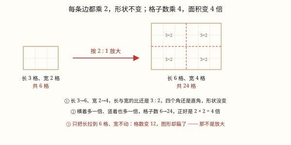

图形的放大与缩小
放大缩小要每条边按相同的比变化。只变长不变宽，图形就变形了——形状不变才是关键。
| 所属主题 | 图形的变换与运动 |
|---|---|
| 所属模块 | 图形与几何 |
| 课标学段 | 第三学段（5~6年级） |
| 前置知识 | 比的意义与化简 |
| 核心素养 | 几何直观空间观念推理意识 |
课标要求
| 图形与几何·图形的位置与运动 | 能从平移、旋转和轴对称的角度欣赏生活中的图案，能借助方格纸设计简单图案，感受数学美，形成空间观念。 印刷第 33 页 行为动词：体验 |
|---|
说明
把一个图形按 n:1 放大，意思是：每一条边的长度都变成原来的 n 倍，角的大小不变。按 1:n 缩小则相反，每条边变成原来的 1/n。
关键在于「每条边」。只把长放大、宽不动，得到的是一个不同的图形，不叫放大。
放大缩小的结果：形状不变、大小变。数学上这两个图形叫相似形。
一个反直觉但重要的结论：按 2:1 放大，边长变 2 倍，面积变 4 倍；按 3:1 放大，面积变 9 倍。面积变化的是倍数的平方。
使用场景
手机照片缩放：双指放大照片，画面变大但人不变形——因为每个像素都按相同比放大。
地图与户型图：把真实尺寸按 1:100 缩小画到纸上。
打印设置：A4 缩印到 A5，所有内容等比缩小。
投影仪：把课件上的图形放大投到幕布上。
模型与实物：车模、建筑模型都是实物的等比缩小。
注意点
每条边都要按同一个比变化，漏掉任何一条都会变形。
角的大小不变。放大后直角还是直角，这个可以用来检验画得对不对。
面积不是按同样倍数变化：边长放大 n 倍，面积放大 n^2 倍。按 2:1 放大，面积是原来的 4 倍，不是 2 倍。
2:1 是放大，1:2 是缩小，前项是变化后的、后项是原来的。别看反了。
放大缩小不改变形状，改变的只是大小。如果形状变了，一定是有边没按比变。

图 1：每条边都乘 2，形状不变，面积变 4 倍
为什么是这样
算理推导
先想清楚「放大」要保住什么。我们说把一张照片放大，期待的是人还是那个人、只是变大——也就是形状不变。
形状不变意味着什么？意味着所有的角都不变，所有的边都按同一个比例伸长。只要有一条边伸得比别人多，角就被拉歪了，形状就变了。
举个例子：一个 2×3 的长方形，按 2:1 放大后变成 4×6。长宽都翻倍，所以它的「瘦长程度」没变，看起来还是同一个长方形，只是大了。
如果只把长变成 6、宽还是 3，图形就变成 6×3，比原来扁得多——这是另一个长方形，不是「原来的放大」。
面积为什么变成 4 倍？放大后的长方形面积是 4×6=24，原来是 2×3=6，24÷6=4。原因很直白：长和宽各翻了 2 倍，面积就翻了 2×2=4 倍。
推而广之：按 n:1 放大，长和宽都变 n 倍，面积就变 n× n = n^2 倍。按 3:1 放大面积变 9 倍，按 10:1 放大面积变 100 倍。
这也解释了为什么缩小同理：按 1:2 缩小，边长变一半，面积变四分之一。
动手实验
在方格纸上画一个 2×3 的长方形，数出面积 6 格。现在按 2:1 放大画一个 4×6 的，数出面积 24 格。再按 3:1 放大画一个 6×9 的，数出面积 54 格。把三个结果列成表：倍数 1、2、3 对应面积 6、24、54——面积倍数分别是 1、4、9，正好是边长倍数的平方。接着做一个反例：画一个 6×3 的长方形（只把长翻了 3 倍），跟原来的 2×3 比一比，一眼就能看出它「扁了」，不是放大而是变形。
按场景的例题
例 1（场景：校园生活） 把课件上的图形投影放大
课件上一个长方形长 4 厘米、宽 3 厘米，按 5:1 投影到幕布上，幕布上的长和宽各是多少？面积是原来的几倍？
解：长 4×5=20 厘米，宽 3×5=15 厘米。面积是原来的 5×5=25 倍。
答：长 20 厘米、宽 15 厘米；面积是原来的 25 倍。
例 2（场景：计量与估算） 画户型图
一个房间实际长 5 米、宽 4 米，按 1:100 画在图纸上，图纸上的长宽各是多少厘米？
解：先化单位：5 米 = 500 厘米。缩小 100 倍：500÷100=5 厘米；400÷100=4 厘米。
答：图纸上长 5 厘米、宽 4 厘米。
例 3（场景：上学日常） 判断是不是正确的放大
把一个 3×2 的长方形按 2:1「放大」，有人画成了 6×2。这是放大吗？
解：不是。宽没有按 2 倍变化，仍是 2。图形从 3×2 变成了 6×2，形状改变（变得更扁），不是放大。
答：不是，应该是 6×4。
例 4（场景：工程建造） 做建筑模型
一栋楼实际高 30 米，模型高 30 厘米。这个模型是按什么比缩小的？
解：统一单位：30 米 = 3000 厘米。30:3000 = 1:100。
答：按 1:100 缩小。
常用推论
按 n:1 放大：每条边变 n 倍，角不变，面积变 n^2 倍。
按 1:n 缩小：每条边变 1/n，角不变，面积变 1/n^2。
形状不变是判断标准：只要有一条边没按比变，就是变形不是缩放。
a:b 中前项是变化后的、后项是原来的，前项大是放大，后项大是缩小。
易错点
错按 2:1 放大时，只把长变 2 倍，宽不变。
为什么错放大要求每条边都按同一比变化。只变一边会改变形状，得到的不是原图的放大。
正确长和宽都乘 2。
错认为按 2:1 放大后面积是原来的 2 倍。
为什么错面积的变化是边长倍数的平方。长宽各变 2 倍，面积变 2×2=4 倍。
正确面积是原来的 4 倍。
错把 2:1 当成缩小、1:2 当成放大。
为什么错比号前项是变化后的、后项是原来的。前项大说明变大了。
正确2:1 是放大（变 2 倍），1:2 是缩小（变一半）。
错放大后把直角画成了钝角。
为什么错放大不改变角度。如果角变了，说明边没有按比变化，画错了。
正确角的大小保持不变，可用来检验画得对不对。
直观理解
把图形放大想成用复印机放大复印：机器把纸上的每一点都按同一个倍数往外推，所以整张图等比变大，人还是那个人。而如果你只把复印纸横向拉长——那不是放大，是把人拉胖了，谁都认不出。判断放大缩小成功与否只有一个标准：看着还是不是原来那个东西。面积变化比边长快，是因为它同时在两个方向上变大了。
放大缩小按比来，每条边儿都要改。只变一边就变形，形状不变才算对。边变二倍面变四，平方关系别忘记。前项后项看清楚，谁大谁小定放缩。